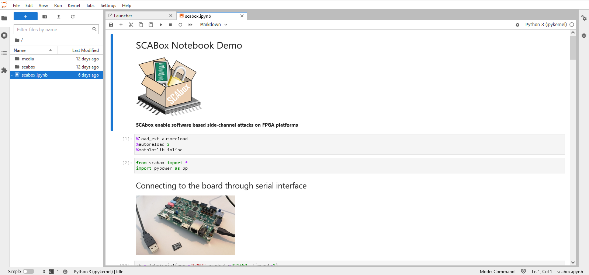
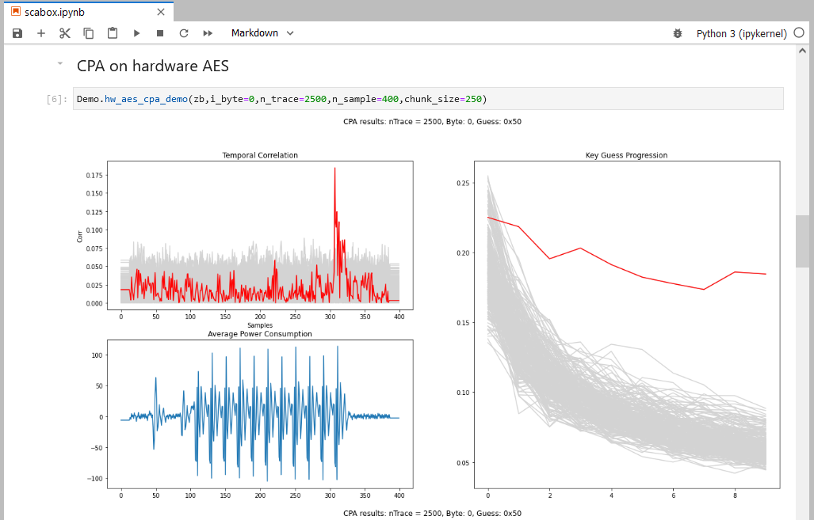

#1 - Run the Pre-Built Demo#
Duration: 20-30 min
Goals#
In this tutorial you will conduct your first FPGA-based side-channel attack in three steps:
Download the Application Image
Launch the Demo
Collect the AES Leakage
Summary: This tutorial do not require any software tool installation or programming. It uses a pre-built boot image available on github that can be loaded into a micro SD card to launch the demo. The image contains an FPGA bitstream that embeds time-to-digital converter sensors (TDC) and a hardware AES. It also contains a software program that we will serve as an interface to communicate with your computer through serial port. At the end of this tutorial you will conduct a correlation power analysis attack using the AES leakage collected using TDCs.
Requirements#
A Zynq board
A micro SD card
A micro USB cable
Any terminal emulator such as PuTTY, TeraTerm or picocom
Python version \(\geq\) 3.8
Tuto #0: Download the SCAbox Framework.
Note
Because it uses pre-built images, this tutorial is board dependent. Currently, two boards are supported: Digilent Zybo z7-10 and Digilent Zybo z7.

Emulator setup#
The terminal emulator allows to communicate via UART with the SoC. It must be configured properly in order to work and allow command typing. Bellow is given the emulator configuration used :
port is : /dev/ttyUSBx
flowcontrol : none
baudrate is : 921600
parity is : none
databits are : 8
stopbits are : 1
local echo is : yes
Note
If your terminal provide it, you can also use the local line edit.
Port name can vary according to your OS, eg. on windows its COMx
Tutorial#
The tutorial starts here
1. Load the boot image inside the SD card#
Insert the SD card into your computer
Format the SD card.
Copy the BOOT.bin image that matches your board reference
Eject the SD card
Note
The folder containing the images is located in your_path/SCAbox/SCAbox-demo/image
2. Launch the Demo#
Insert the SD card into the Zybo board card slot.
Place the jumper 5 in SD boot position
Connect the Zybo to your computer using the micro USB cable
Power on the Zybo and wait for the green led “DONE” to illuminate.
Note
If the “DONE” led is off, press the “PS-SRST” button. If it remains off the image is probably not compatible with your board, or the SD card is not supported. Please check the requirement section at the beginning of this tutorial.
{kind=link}
Start the serial communication with the parameters given in the Emulator setup section at the beginning of this tutorial
Press the “PS-SRST” button, the following welcome message should appear
{kind=link}
You can now use the available serial commands to perform AES encryptions, side-channel acquisitions, etc. If you want to learn more about available commands please follow the Tuto #3.
3. Collect the AES Leakage#
To facilitate the data acquisition and visualisation SCAbox comes with a simple notebook. This jupyter notebook connects directly to the Zynq board through a serial communication and can exchange data and commands with the device.
Note
You can install jupyter notebook using pip install jupyterlab
Open a terminal at the notebook path: your_path/SCAbox/SCAbox-notebook/src
Then launch jupyter-lab and click on scabox.ipynb
$ jupyter-lab
The following view should appear:
{kind=link}
Import scabox SCA library by launching the following cell
from scabox import *
Connect to your Zybo using the following cell
zb = ZyboSerial(port=None,baudrate=921600, timeout=1)
Launch a demo cpa
n_trace: 2500
chunk_size: 250
n_sample: 400
i_byte: 0
Demo.hw_aes_cpa_demo(zb,i_byte=0,n_trace=2500,n_sample=400,chunk_size=250)
This will launch 2500 AES acquisitions and compute CPA on the last round.
{kind=link}
Results are updated dynamically every 250 traces. The temporal correlation indicates the current key guess. On the right, the concord view shows the key guess progression over the number of traces used. Here it took less than 250 traces to extract the secret key byte.